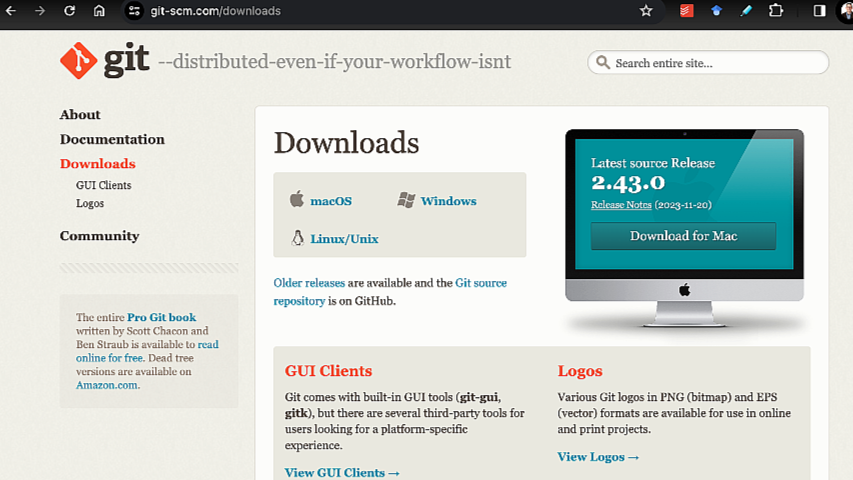
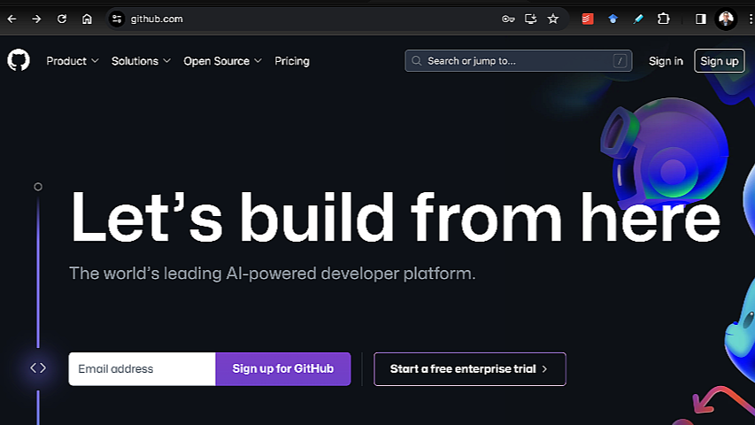
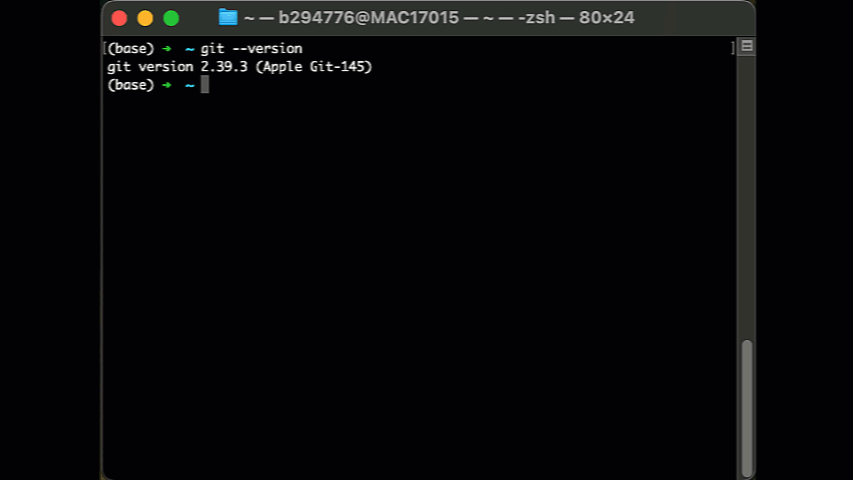
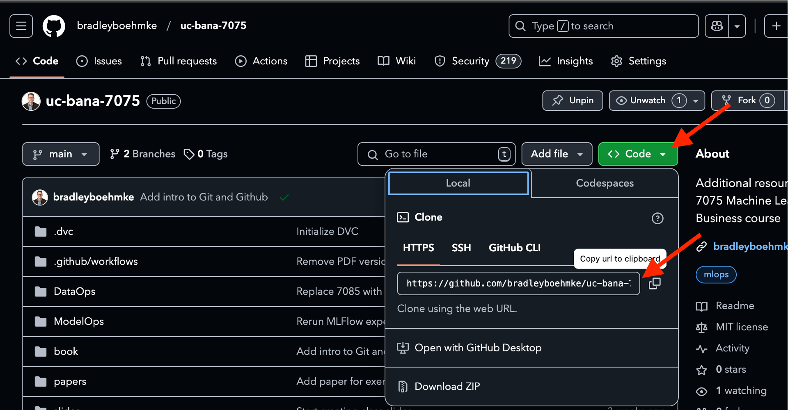
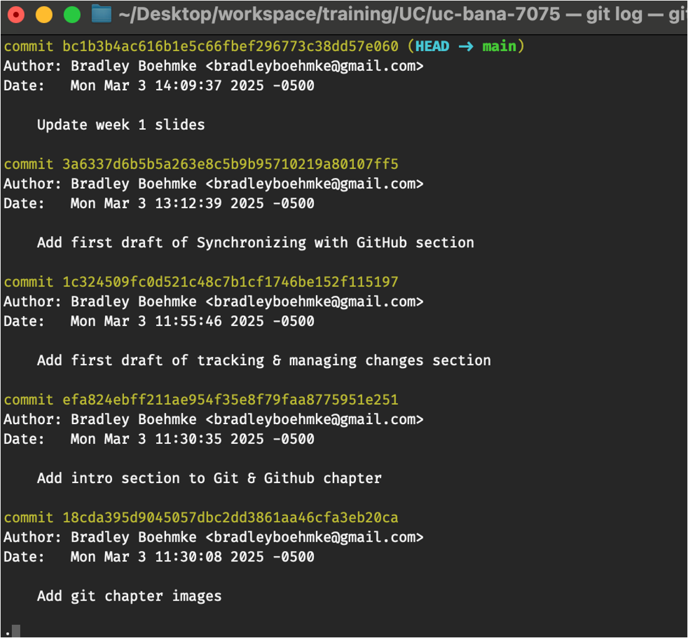

%%{init: {'gitGraph': {'mainBranchName': 'Main codebase'}} }%%
gitGraph
commit id: "Version 1"
commit id: "Version 2"
branch "Your code"
commit id: "add new feature"
checkout "Main codebase"
commit id: "Version 3"
branch "Someone else's code"
checkout "Main codebase"
merge "Your code" id: "Version 4"
checkout "Someone else's code"
commit id: "another new feature"
checkout "Main codebase"
merge "Someone else's code" id: "Version 5"
11 Introduction to Git and GitHub
Reading Time: 20-30 minutes
Version control is an essential part of modern software development, enabling teams to collaborate efficiently, track changes, and manage codebases systematically. Git, a distributed version control system, has become the industry standard for tracking modifications and maintaining project history. GitHub, a cloud-based platform built around Git, enhances collaboration by providing a central repository for sharing, reviewing, and integrating code changes.
This chapter introduces Git and GitHub as foundational tools in the DevOps journey. Understanding version control and collaboration through these tools is essential for managing code effectively and enabling seamless teamwork. Whether working independently or within a team, proficiency in Git and GitHub empowers developers to maintain project integrity, experiment with new features, and contribute to open-source projects.
By the end of this chapter, you will:
- Understand the purpose of Git and GitHub.
- Set up Git on your local machine and create a GitHub account.
- Learn basic Git commands to track changes, commit updates, and sync repositories.
- Use branching, merging, and pull requests to collaborate effectively.
- Gain an introductory understanding of CI/CD and how GitHub integrates with automated workflows.
Through hands-on exercises and step-by-step guides, this chapter will equip you with the fundamental skills to manage source code efficiently and collaborate on projects with confidence.
11.1 Introduction to Git and GitHub
What is Version Control?
Version control is a system that records changes to a file or set of files over time, allowing developers to track modifications, revert to previous versions, and collaborate seamlessly. It is essential for managing code in any software development process, preventing loss of work, and ensuring a structured workflow.
Without version control, teams often encounter challenges such as overwritten files, difficulty tracking changes, and conflicts when multiple contributors work on the same codebase. For instance, in machine learning (ML) projects, version control is crucial for tracking changes to datasets, model configurations, and source code, enabling reproducibility and iterative improvements.
What is Git?
Git is a distributed version control system (DVCS) designed to handle everything from small to very large projects efficiently. Unlike centralized version control systems, where a single server stores all versions of a project, Git enables every user to have a complete local copy of the repository. This makes Git robust in handling offline work, merging changes, and maintaining a reliable history of modifications.
For ML systems, Git helps in maintaining different experiment branches, managing multiple versions of code, and integrating model versioning workflows. Developers and data scientists use Git to collaborate on research code, ensuring that experimental changes do not disrupt stable pipelines.
What is GitHub?
GitHub is a cloud-based platform that provides remote repository hosting and additional features for version control collaboration. It enhances Git’s capabilities by offering tools for pull requests, issue tracking, and code review, making it a central hub for software development.
While GitHub is one of the most popular Git hosting services, alternatives like GitLab and Bitbucket provide similar functionality with varying degrees of customization and integration options. In the context of DevOps and ML workflows, GitHub plays a key role in continuous integration/continuous deployment (CI/CD) pipelines, enabling automated testing, deployment, and monitoring of ML models in production environments. By using GitHub, ML engineers can streamline collaboration, ensure code quality, and integrate seamlessly with MLOps platforms.
architecture-beta
service github(cloud)[Github]
service git(disk)[Git on local computer]
git:T <--> B:github
Using Git and GitHub Together
Although Git and GitHub are separate tools, they are most commonly used together in modern software development. Git serves as the local version control system that tracks changes and manages branches, while GitHub acts as the remote hosting service that facilitates collaboration among multiple contributors. Developers use Git commands to manage their local repositories and push their changes to GitHub for storage, sharing, and team collaboration.

For ML teams, this combination is particularly powerful. By using Git locally to track changes in data processing scripts, model training code, and experiment configurations, teams can ensure that their work is versioned and reproducible. GitHub then provides a centralized location where team members can review each other’s code, integrate improvements, and leverage automated workflows for model deployment and testing. The synergy between Git and GitHub makes them indispensable tools for both traditional software development and MLOps practices.
11.2 Setting Up Git and GitHub
Git and GitHub are essential tools for managing and collaborating on code projects. This section provides a step-by-step guide to installing Git, creating a GitHub account, and configuring Git for first-time use.
Installing Git
To begin using Git, you must first install it on your local machine. You can download Git for all operating systems from the official website: https://git-scm.com/downloads. This website provides multiple installation options for each operating system, allowing you to choose the one that best fits your needs.

The following are the most common approaches used.
Windows
Download the Git installer from https://git-scm.com/downloads.
Run the installer and follow the setup instructions, selecting default options unless specific configurations are needed.
Open the Command Prompt or Git Bash and verify the installation by running:
git --version
macOS
Open the Terminal application.
Install Git using Homebrew (recommended):
brew install gitVerify the installation:
git --version
Linux
Open the terminal and use the package manager for your distribution:
Debian/Ubuntu:
sudo apt update sudo apt install gitFedora:
sudo dnf install gitArch Linux:
sudo pacman -S git
Confirm the installation:
git --version
Creating a GitHub Account
To use GitHub for hosting and collaborating on repositories, you need an account.
- Go to https://github.com. 
- Click Sign Up and enter your email, password, and username.
- Follow the prompts to verify your email and complete the registration process.
- Once logged in, explore key GitHub features. Take some time to browse around and look at other user profiles and GitHub repositories to see how they are organized. A great way to start is by checking out the following repositories:
pandas: pandas
FastAPI: https://github.com/tiangolo/fastapi
Pydantic: https://github.com/pydantic/pydantic
Python Data Visualization: https://github.com/talkpython/python-data-visualization
In these repositories, observe how the code is structured, review the README file, and explore the issues, pull requests, and GitHub Actions tabs. Don’t worry about understanding these as we will be covering them shortly; just get a feel for how a Github repo is structured.
Configuring Git for First Use
Before using Git, configure it with your personal information to ensure that commits are properly attributed to you. Configuring Git is essential because it associates your work with your identity, ensuring that every commit you make is correctly attributed to you in Git logs and GitHub repositories.
Git has many other settings that can be customized to fit your workflow. You can explore the full list of available configuration options in the official Git documentation.
Open a terminal or command prompt.
Set your name:
git config --global user.name "Your Name"Set your email:
git config --global user.email "you@example.com"Verify your configuration:
git config --list
The --global flag ensures that these settings apply to all Git repositories on your system. Without this flag, the configuration would only apply to the current repository, meaning you would need to set these details again for every new project. By setting them globally, you ensure a consistent identity across all your projects.

With Git installed and configured, and a GitHub account created, you’re now ready to start using Git for version control and collaboration. Git and GitHub are extremely powerful and sophisticated tools with a wide range of functionalities. However, for typical day-to-day use on projects, the Git and GitHub workflow can be boiled down to just a handful of essential functionalities. The video that follows provides an introduction to this basic workflow, and the sections that follow will walk you through this workflow step-by-step.
11.3 Git Basics: Tracking and Managing Changes
Git provides powerful tools for tracking and managing changes in your projects. This section covers fundamental Git operations, including creating a repository, staging and committing changes, and viewing repository history.
Creating a Local Git Repository
A Git repository is essentially a directory (or folder) that has been set up to track changes using Git. When you initialize a Git repository, Git begins monitoring changes to files within that directory, allowing you to record, revert, and collaborate efficiently. You can create a new local repository from scratch or clone an existing one from a remote source to start tracking changes immediately.
Initializing a Repository
To start tracking a project with Git, navigate to the project directory in your terminal and initialize a repository:
cd your-project-folder
git initThis creates a hidden .git directory, where Git stores all version control information.
.git directory
At this time, you don’t need to worry about the contents of the .git directory, as it is managed by Git automatically. However, if you want to explore its contents, you can make hidden files visible:
On Windows, open File Explorer, go to the View tab, and check Hidden items.
On macOS or Linux, open the terminal and use:
ls -laOr you can also use `Cmd + Shift + .`
Be cautious not to modify any files inside the .git directory, as doing so may corrupt the repository.
Cloning a Repository
Often, projects you work on are not brand new but rather existing projects where you are a new collaborator. Most of the time, these projects are already hosted on GitHub, and your objective is to make a copy of the repository on your local machine so you can start contributing to the source code. If you want to work on an existing project, you can clone a remote repository:
git clone <repository-url>This creates a local copy of the remote repository on your machine, allowing you to track and contribute changes.
To find the Git repository URL on GitHub, navigate to the main page of the repository you are interested in. Under the repository name, you will see a green “Code” button. Click on this button to reveal a dropdown menu that displays the repository URL. You can choose between HTTPS, SSH, or GitHub CLI options. Copy the URL provided to use it for cloning the repository to your local machine or for other Git operations.
For example, if you were to clone the UC BANA 7075 Github repo shown below you would use:
git clone https://github.com/bradleyboehmke/uc-bana-7075.git
Staging and Committing Changes
Now that you have a local repository set up for your project, you can start making changes to project documentation, code files, or other assets and save these changes systematically. This ensures that you have a record of modifications, making it easier to track progress, revert changes if necessary, and collaborate with others. Git uses a two-step process to save changes:
- Step 1 is called staging and
- Step 2 is called committing.
Adding Files to Staging
Staging in Git is the process of preparing changes for a commit. When you modify files in your working directory, Git does not automatically track them for the next commit. Instead, you must explicitly add them to the staging area using the git add command. This allows you to carefully select which changes you want to include in your next commit, rather than committing all changes at once.
Think of the staging area as a middle step between your working directory (where changes are made) and your repository (where commits are stored). This separation gives you greater control over your commits, allowing you to structure them in a meaningful way.
To stage a specific file you can use:
git add filenameTo stage all modified files:
git add .Be care when using git add . as this will stage all files that have changed. Often, we want to be deliberate about which files we stage so files don’t accidently get staged and committed.
Committing Changes
Once files are staged, you can commit them with a descriptive message:
git commit -m "Commit message describing changes"Commits serve as snapshots of your project, capturing the exact state of your files at a given point in time. Each commit represents a recorded change, allowing you to track modifications, revert to previous versions if needed, and collaborate with others more effectively. Commits also create a historical timeline of your project, making it easier to understand the evolution of the codebase and identify when specific changes were introduced. By using meaningful commit messages, you can document the purpose of each change, improving project maintainability and readability.
%%{init: {'gitGraph': {'mainBranchName': 'Main codebase'}} }%%
gitGraph
commit id: "Change 1"
commit id: "Change 2"
commit id: "Change 3"
Viewing Repository Status & History
Checking Current Work Status
At any point while modifying files in the repository, you can check which files have changed, which are staged, and which are unstaged by running the following command:
git statusThis command provides a summary of the repository’s current state.
Checking Commit History
You can also view a log of all past commits with:
git logThis displays commit messages, authors, timestamps, and unique commit hashes. For example, if I look at the recent commits for the log of the repo for this class it looks like:

Understanding the SHA Hash for Commits
Each commit is assigned a unique SHA hash, which acts as an identifier, ensuring that every change in the repository has a distinct reference. A SHA (Secure Hash Algorithm) hash in Git is a 40-character hexadecimal string that uniquely represents a commit. This hash is generated based on the commit’s content, metadata, and parent commit(s), making it nearly impossible to duplicate. The SHA hash is used to reference specific commits, allowing developers to revert to, compare, or identify previous changes efficiently.
%%{init: {'gitGraph': {'mainBranchName': 'Main codebase'}} }%%
gitGraph
commit
commit
commit
Understanding SHA hashes is crucial for navigating a project’s history and managing different versions effectively. Each SHA hash serves as a permanent reference point, enabling developers to track specific changes, revert to stable versions, and collaborate efficiently. When working in a team, referencing SHA hashes in discussions and bug fixes ensures clarity and precision, reducing ambiguity when identifying code changes. Additionally, SHA hashes play a fundamental role in advanced Git operations such as rebasing and resolving merge conflicts.
Although understanding SHA hashes is important, for now, just realize that each commit has a SHA hash identifier that allows you to reference specific commits throughout a project’s lifecycle.
You can reference specific commits using their SHA hash in various Git commands, such as checking out a previous commit. This will allow you to revert all project files back to the state that they were in based on the commit hash provided.
git checkout <commit-hash>11.4 Synchronizing with GitHub
Once you have a local Git repository, you often need to synchronize it with a remote repository hosted on GitHub. This allows you to share your work, collaborate with others, and ensure your local repository stays up to date with any changes made remotely. This section covers how to connect a local repository to GitHub, pull updates from GitHub, and handle merge conflicts when they arise.
Creating a New Repository on GitHub
If you do not already have a local repository, you can start your project repo on GitHub by creating a new repository and cloning it locally to start working with. This video provides an example:
The steps to do this include:
Navigate to GitHub and log in to your account.
Click the + icon in the upper-right corner and select New repository.
Enter a repository name, choose public or private visibility, and click Create repository.
Copy the repository URL provided by GitHub.
Open a terminal and navigate to the directory where you want to clone the repository.
Use the following command to clone the repository to your local machine:
git clone https://github.com/your-username/your-repository.git
Your repository is now set up locally, and you can start working with it. This means you have a dedicated directory on your computer where you can create, modify, and track files under version control. Any changes you make can be committed and later synchronized with GitHub, enabling seamless collaboration and backup.
Pushing a New Local Repository to GitHub
Sometimes, you may start a project on your local machine without creating a GitHub repository first. In such cases, you can push your local repository to GitHub by adding a remote repository. If you have an existing local repository and want to push it to GitHub, follow these steps:
Open a terminal and navigate to your local repository:
cd your-project-folderAdd the GitHub repository as a remote:
git remote add origin https://github.com/your-username/your-repository.gitVerify that the remote was added correctly:
git remote -vPush the local repository to GitHub:
git push -u origin mainThis command uploads your local commits to the remote repository and sets the
originremote as the default for future pushes.
Pushing & Pulling Changes from GitHub
Once you have a local repository connected to a remote GitHub repository, you will need to push and pull changes between the two to keep them in sync over time and as the project progresses. When you make changes to the project locally and commit them, you can push these changes to GitHub using:
git push origin mainThis updates the remote repository with your latest committed changes, making them available for others to see and collaborate on.
Similarly, other contributors may make updates and push them to GitHub. To ensure your local repository remains up to date, you need to pull these changes from GitHub.
git pull origin mainThis command updates your local repo with the latest changes from GitHub.
11.5 Collaboration with Branching and Pull Requests
Git and GitHub provide powerful tools for collaboration, and one of the most important features is branching. Branching allows developers to work on different tasks or features without affecting the main codebase. This section introduces the concept of branches, pull requests, and best practices for effective collaboration.
Why Use Branches?
When working on a software project, it’s essential to develop new features, fix bugs, and experiment without disrupting the main working version of the code. Branches provide a way to create separate workspaces for these tasks. Instead of working directly on the main branch, which represents the stable version of the project, developers create new branches to isolate their changes.
A branch in Git is like a separate workspace where you can work on new features, bug fixes, or experiments without affecting the main version of your project. Think of it as a parallel timeline where you can make changes without disrupting the main history. Once your work is complete, you can merge your branch back into the main branch.
%%{init: {'gitGraph': {'mainBranchName': 'Main codebase'}} }%%
gitGraph
commit id: "Version 1"
commit id: "Version 2"
branch "Branch 1"
commit id: "little feature"
checkout "Main codebase"
commit id: "Version 3"
branch "Branch 2"
checkout "Main codebase"
merge "Branch 1" id: "Version 4"
checkout "Branch 2"
commit id: "big feature"
checkout "Main codebase"
merge "Branch 2" id: "Version 5"
Using branches has several advantages:
- Allows multiple team members to work on different features simultaneously.
- Prevents incomplete or experimental code from affecting the main codebase.
- Makes it easier to review and test changes before merging them.
The following sections will provide a nice introduction to branching but to learn more about good branching practices and detailed explanations of branching strategies, refer to A Guide to Branching in Git.
Creating and Switching Branches
To create a new branch, use the following command:
git branch new-featureThis command creates a new branch called new-feature, but it does not switch to it automatically. To switch to the newly created branch, use:
git checkout new-featureor (recommended)
git switch new-featureNow, any changes you make will be recorded in the new-feature branch instead of main.
%%{init: {'gitGraph': {'mainBranchName': 'main'}} }%%
gitGraph
commit id: "Version 1"
commit id: "Version 2"
branch "new-feature"
commit id: "little feature"
new-feature to allow you to work on code for the new feature without impacting the current code in the main branch.
Once work on a branch is complete, the changes need to be merged back into the main branch. There are a couple of ways to merge branches. One way is to merge the branches locally using Git commands. Another way is to use a pull request on GitHub to propose the changes, allow others to review and approve them, and then perform the merge. The latter approach is more common in collaborative projects, as it ensures code quality and enables team discussion before integration. However, the following sections will discuss both approaches.
Merging Branches
Merging branches locally allows you to integrate changes from one branch into another without relying on GitHub. This approach is useful when working offline, testing changes before pushing them, or handling merges in a controlled environment before sharing updates with the team. To merge the branches locally, first, switch back to main:
git checkout main(or use git switch main) Then merge the feature branch:
git merge new-featureIf there are no conflicts, Git will integrate the changes. If conflicts exist, Git will prompt you to resolve them manually before completing the merge.
%%{init: {'gitGraph': {'mainBranchName': 'main'}} }%%
gitGraph
commit id: "Version 1"
commit id: "Version 2"
branch "new-feature"
commit id: "little feature"
checkout "main"
merge "new-feature"
new-feature branch into the main branch.
For more details on merging strategies and resolving merge conflicts, check out Merging in Git and How to Resolve Merge Conflicts.
Pull Requests on GitHub
A Pull Request (PR) is a way to propose changes from one branch to another on GitHub. PRs allow for discussion, review, and approval before merging changes. They are especially useful in collaborative projects where multiple developers are working on different features simultaneously. By using pull requests, teams can review changes before they are merged, ensuring code quality and reducing the risk of introducing bugs.
While merging locally is useful for small, independent changes, pull requests should be used when working in a team setting to facilitate discussions, maintain a clear project history, and ensure that changes align with project goals. PRs also integrate well with automated testing and continuous integration workflows, making them a preferred method for managing contributions in larger projects.
Opening a Pull Request
Push your branch to GitHub:
git push origin new-featureGo to your repository on GitHub.
Click the Pull Requests tab and then New Pull Request.
Select the branch you want to merge into
mainand provide a clear description of your changes.Request a review from teammates to get feedback on your code.
Merging a Pull Request
Once the pull request is approved:
Click the Merge Pull Request button on GitHub.
Delete the branch if it is no longer needed.
Update your local repository:
git pull origin main
Best Practices for Collaboration
Collaboration in Git and GitHub is most effective when following best practices. This includes writing clear commit messages, keeping branches small and focused, and regularly syncing with the main branch. Additionally, requesting code reviews helps ensure code quality and facilitates better teamwork.
Write meaningful commit messages – Each commit should clearly describe what was changed and why. A good commit message follows a standard format and is concise yet descriptive. For example:
feat: Add model monitoring with logging Implemented model performance monitoring with logging capabilities. Added a logging framework to track prediction accuracy, response times, and data drift over time.Following a clear commit message format helps other developers understand the purpose of changes and makes version history easier to navigate. To learn more about writing effective commit messages, refer to How to Write a Git Commit Message.
Keep branches small and focused – Large branches can become difficult to review and merge. Aim for focused, single-purpose branches.
Regularly sync with
main– Periodically pull updates frommainto keep your branch up to date and reduce merge conflicts.Request code reviews – Encourage collaboration and ensure code quality by having peers review changes before merging. A good code review process helps catch bugs early, enforces coding standards, and facilitates knowledge sharing among team members. When reviewing code, consider readability, maintainability, and adherence to project guidelines. To learn more about effective code reviews, refer to How to Conduct a Code Review.
By following these best practices, teams can collaborate effectively, maintain clean code, and streamline the development process.
For a more detailed discussion on best practices for pull requests, see the following references:
11.6 Introduction to CI/CD with GitHub Actions
CI/CD stands for Continuous Integration (CI) and Continuous Deployment (CD). It is a fundamental practice in modern software development and DevOps that helps automate the process of integrating and deploying code changes.
- Continuous Integration (CI) ensures that every code change is automatically tested and validated before being merged into the main branch. This helps catch bugs early and maintain software quality.
- Continuous Deployment (CD) takes CI a step further by automatically deploying validated changes to production or staging environments, reducing manual intervention and enabling faster release cycles.
For machine learning (ML) systems, CI/CD is particularly important as it helps automate model training, testing, and deployment, ensuring reproducibility and consistency across different environments. Unlike traditional software CI/CD, MLOps-specific CI/CD includes additional steps such as data validation, feature engineering, model retraining, and evaluation before deployment.
These pipelines help streamline workflows across various ML system processes, including:
- Data Ingestion & Processing: Automating data extraction, transformation, and validation before feeding into model training.
- Model Training & Evaluation: Triggering training jobs when new data is available, followed by validation tests to check for performance regressions or drift.
- Model Deployment & Serving: Ensuring smooth transitions from development to production with robust version control and rollback mechanisms.
- Continuous Monitoring & Feedback Loops: Monitoring performance metrics and triggering model retraining when needed.
Introduction to GitHub Actions
GitHub Actions is a powerful automation tool that enables developers to create workflows directly within a GitHub repository. It allows users to automate tasks such as testing, building, and deploying applications based on Git events (e.g., push, pull request, or scheduled triggers).
GitHub Actions is particularly useful in CI/CD pipelines because it provides:
- Automated Testing – Run unit tests, integration tests, and code quality checks automatically.
- Continuous Deployment – Deploy applications or ML models to cloud environments or production servers.
- Custom Workflows – Define and trigger sequences of automated steps using YAML configuration files.
GitHub Actions workflows are stored inside the .github/workflows directory within a repository. This directory contains YAML configuration files that define various automation tasks. Each workflow file specifies when it should run, what environment it should use, and the sequence of actions to execute. For example, the following illustrates an ML project (ml-project) git repo that contains subdirectories for data ingestion, data cleaning, data validation, model experimentation, etc.; along with the .github/workflows directory that contains an example ML CI Pipeline yaml workflow file.
ml-project/
│── .gitignore
│
│── .github/
│ ├── workflows/
│ │ ├── ml_ci_pipeline.yml
│
│── data_ingestion/
│ ├── fetch_data.py
│ ├── ingest_pipeline.py
│
│── data_cleaning/
│ ├── clean_data.py
│ ├── preprocess.py
│
│── data_validation/
│ ├── validate_schema.py
│ ├── check_duplicates.py
│
│── model_experimentation/
│ ├── train.py
│ ├── evaluate.py
│
│── model_deployment/
│ ├── deploy.py
│ ├── inference.py
│
│── model_monitoring/
│ ├── monitor_performance.py
│ ├── drift_detection.py
│
│── tests/
│ ├── test_data_ingestion.py
│ ├── test_model_training.py
│ ├── test_model_inference.py
│
│── requirements.txt
│── README.mdFor example, here is the GitHub Actions workflow that I use to automatically build and publish this book on a daily basis - publish-book.yml.
And the following GitHub Actions workflow file provides and example of what the ml_ci_pipeline.yml file may look like. This example workflow automates the process of training and evaluating a machine learning model every time new code is pushed to the main branch in the repository:
name: ML CI Pipeline
on:
push:
branches:
- main
jobs:
train-and-test:
runs-on: ubuntu-latest
steps:
- name: Checkout repository
uses: actions/checkout@v3
- name: Set up Python
uses: actions/setup-python@v3
with:
python-version: '3.8'
- name: Install dependencies
run: |
pip install -r requirements.txt
- name: Train model
run: |
python train.py
- name: Evaluate model
run: |
python evaluate.pyThis workflow does the following:
- Triggers on a push to the
mainbranch. - Runs on an Ubuntu-based virtual machine.
- Checks out the repository code.
- Sets up Python and installs dependencies.
- Runs a training script (
train.py) to train an ML model. - Evaluates the trained model using a validation script (
evaluate.py).
By integrating CI/CD into ML workflows, this process ensures that model training and evaluation are automated, helping maintain performance consistency and reproducibility.
This workflow does the following:
- Triggers on a push to the
mainbranch. - Runs on an Ubuntu-based virtual machine.
- Checks out the repository code.
- Sets up Python and installs dependencies.
- Runs tests using
pytestto validate changes.
Next Steps in Learning CI/CD
To deepen your understanding of CI/CD and GitHub Actions, explore these resources:
By implementing CI/CD workflows with GitHub Actions, you can enhance automation, improve code quality, and accelerate deployment in software and ML projects.
11.7 Summary
In this chapter, we explored the fundamental concepts of Git and GitHub, essential tools for version control and collaboration in software development and MLOps. By leveraging Git’s capabilities, teams can efficiently track changes, collaborate on code, and maintain project history, while GitHub enhances these functionalities with cloud-based repository hosting, pull requests, and CI/CD automation.
Key Takeaways
- Git and Version Control: Git provides a distributed version control system that allows developers to track changes, revert to previous versions, and collaborate without losing work.
- Setting Up Git and GitHub: We covered installing Git, configuring user settings, and creating repositories on GitHub to start managing code effectively.
- Tracking and Managing Changes: Fundamental Git operations such as adding files, committing changes, and viewing repository history help maintain a structured development process.
- Branching and Collaboration: Branching enables isolated development, and pull requests facilitate team collaboration by allowing reviews and discussions before merging changes.
- Synchronizing with GitHub: We explored how to push and pull changes between local and remote repositories to keep projects up to date and prevent conflicts.
- CI/CD with GitHub Actions: Continuous Integration and Deployment (CI/CD) automates testing, validation, and deployment, streamlining ML workflows and DevOps processes.
Why This Matters for ML and DevOps
Version control and CI/CD are critical components of an efficient ML development pipeline. In ML projects, Git helps manage datasets, experiment tracking, and model versioning, while GitHub Actions facilitates automation, ensuring reproducibility and consistency across different environments. By integrating Git and GitHub into ML workflows, teams can collaborate more effectively, improve code quality, and deploy models with confidence.
Next Steps
To deepen your understanding of Git, GitHub, and CI/CD, consider:
- Practicing with real-world projects to get hands-on experience.
- Exploring advanced Git features such as rebasing, stash, and cherry-picking.
- Learning more about GitHub Actions to build robust CI/CD pipelines.
By mastering Git and GitHub, you will be well-equipped to manage code efficiently, collaborate seamlessly, and automate critical aspects of your ML and DevOps workflows.
11.8 Exercise
You just joined a data science team at a company, and they use Git and GitHub for collaboration. Your manager has asked you to set up your GitHub account, clone the team’s repository, and make your first contribution. To demonstrate this ability, execute the following tasks:
1. Set Up Git and GitHub
- Install Git on your machine.
- Create a GitHub account if you haven’t already.
- Configure Git with your name and email.
2. Work with a Git Repository
- Create a new repository on GitHub.
- Clone the repository to your local machine.
- Add a new file (e.g.,
hello_git.txt), write a short message inside, and commit the changes. - Push your changes to GitHub.
3. Branching and Pull Requests
- Create a new branch called
feature-update. - Modify an existing file or add a new file.
- Commit and push the changes to the
feature-updatebranch. - Open a pull request on GitHub to merge your changes into
main. - Merge the pull request once approved.
4. Exploring GitHub Actions (Bonus Task)
- Add a GitHub Actions workflow file that runs a simple Python test on every push.
- Observe the automated workflow execution.
5. Reflection Questions
- Why is version control essential for collaborative coding?
- How does Git help manage different versions of a project?
- What are the benefits of using GitHub for collaboration?
- How does CI/CD improve software and model deployment?